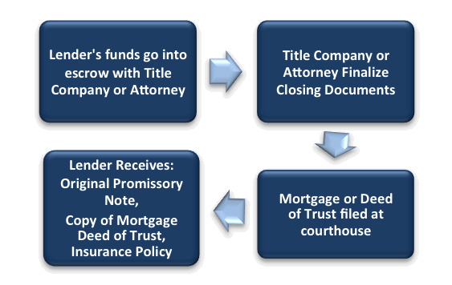

We Protect Our Lenders
Mortgages offer the banks solid, long-term, fixed returns. You can put yourself in the position of the bank by directing your investment capital, including retirement funds to well-secured real estate mortgages. Mortgages have ultimate safety because if default occurs, the bank can recover its investment as the first lien holder on the property.
Each property we acquire is put through a rigorous evaluation process in order to assess the profitability before the property is ever purchased. “lntegrity" is an essential part of our business, and we only make sound investment decisions. Also, for your protection, you are also provided these documents to secure your investment capital:

Promissory Note: This is your collateral for your investment capital
Deed of Trust/Mortgage: This is the document that is recorded with the county clerk and recorder to publicly secure your investment against the real property that we are providing as collateral
Hazard Insurance Policy: This is where you as the private lender would be listed as the “Mortgagee” for your protection in case of fire or natural disaster, etc.
We do pay for a title search as well as a title policy on the home just as we would in a typical transaction. For a rental investment with a long-term note, we always keep a valid hazard insurance policy on the property to protect against causalities. You’ll be named as a mortgagee and notified if the insurance was not kept current. In the event of any damage to the property, insurance distributions would be used to rebuild or repair the property, or used to repay you.